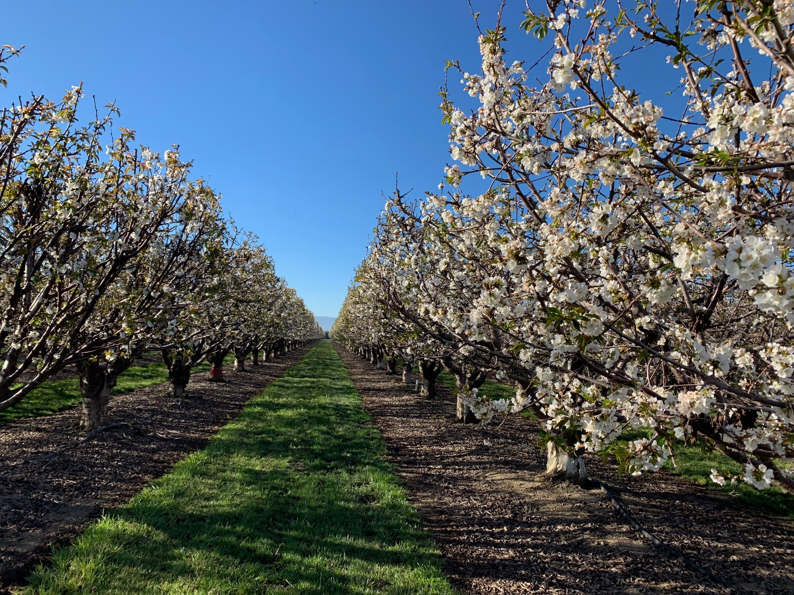
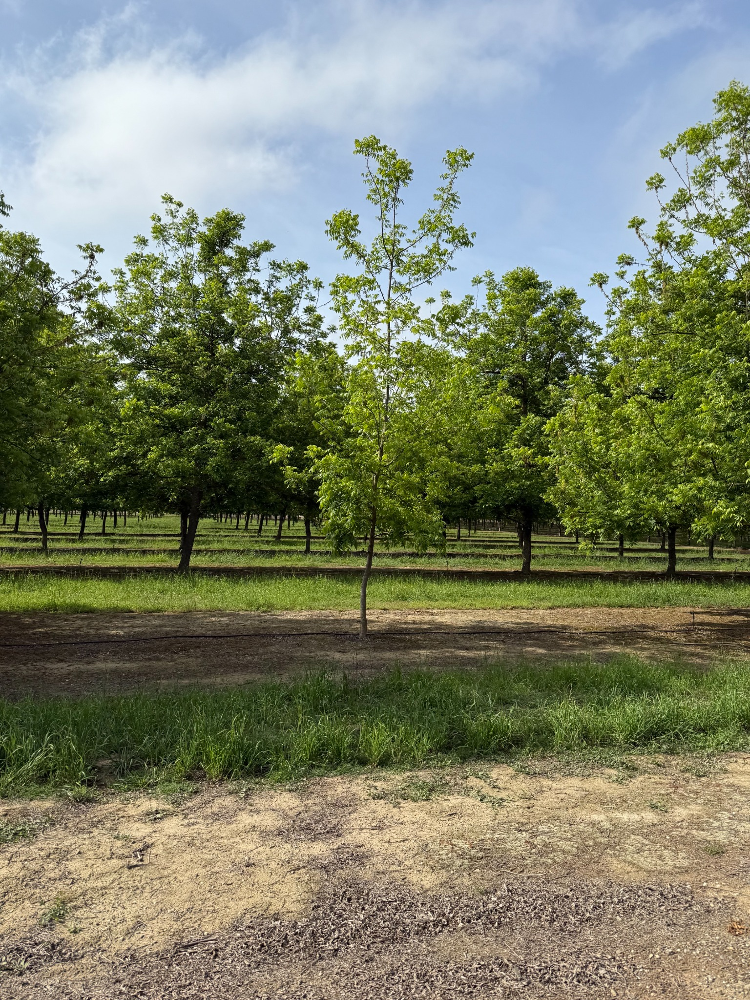

Aerial Photography
Drone photos of orchards and properties to document visible conditions. Coverage and timing are planned around what you need to see.

Current aerial photography and organized field information for orchards and land-based projects.
FAA Part 107 Remote Pilot
Services
Drone photos of orchards and properties to document visible conditions. Coverage and timing are planned around what you need to see.
Dated photos and observation notes for orchard management or a closer look after a storm. Repeat visits can document visible changes over time.
Organize existing GIS files and agricultural observations into a consistent format for your team. Support includes data cleanup and preparation for the software you already use.

Updated imagery
Older public imagery may not show recent changes. A new set of aerial photos can provide a dated visual record of your orchard or property.
Email the location and what you want documented to discuss a suitable approach.
Approach
Define what you need to document and how you plan to use it. Agree on the coverage and deliverables before scheduling field work.
M.S. in Geographic Information Science. FAA Part 107 Remote Pilot Certificate.
Service area
Available for projects throughout the western U.S. and beyond, depending on location and scope.
Contact
Email the location and what you need documented or organized. Include your preferred timing, if you have one.
Services focus on photography, visible-condition documentation and data support. Land surveying, boundary determination and engineering services are not offered.